Chapter 10. Extending Notation
This chapter gives an introduction of Notation Extension. It gives basic
concepts of Notation Extension and simple specification of language syntax for
Notation Extension. For example, it shows how to add new sort diagram to take
advantage of Notation Extension.
Why Notation Extension?
Notation Extension is a extension concept for user to define and use user's
own notation for UML model. StarUML supports platform to operate the featrue of
Notation Extension. Well, why Notation Extension is needed?
- Profile supports iconic and decoration view but it can't express exactly
in required form for notation.
- For mapping ER-Diagram to UML, mapping ER model to UML model looks
proper but mapping notation to UML notation looks unnatural.
- UML meta model is an enough data container to contain all kinds of
modeling semantics. If UML tool can extend its notation freely, it can play
a meta-modeling tool role in all modeling area.
By expressing notation(form) in the same way as before but describing model
with UML model, it gives to users mutual supplement, efficiency, and
compatibility between old area and UML area.
Notation Extension Language
Basic Syntax
Syntax of Notation Extension Language is similar to Scheme language(dialect
of LISP). Basic unit is expression and whole statement consists of one
expression. Expression is composed of value or operation expression. Value means
real, integer, string, boolean, identifier. Operation expression starts with "("
and ends with ")". Operator and operands(they describe another expressions)
appear in parentheses. Operator and identifier are not case-sensitive. Comment
style follows the comment rule of C++ and Java. Comment uses "//" on one line
and "/* */" on multiple lines.
expr ::= flt | int | str | bool | nil | ident | "(" oper (expr)* ")" ;
First statement of Notation Extension Language is "notation" expression.
Operator is "notation", and arguments are "onarrange" and "ondraw" expressions.
A "notation" expression corresponds to a "stereotype" in profile. The "notation"
expression describes how stereotype shape is shown. When stereotyped element is
shown in diagram, the expression is executed. First, "onarrange" expression
executes argumented expressions to recalculate element position . "ondraw"
expression is executed to draw element after "onarrange" expression execution.
(notation
(onarrange ...)
(ondraw ...)
)
The followings are available argument expression for "onarrange" and "ondraw"
expression.
- sequence
- if
- for
- set
- logical, comparison operator
- built-in function
sequence expression
"sequence" expression groups and executes arguments in order. The arguments
of "sequence" expression are also expression and the number of them is not
limited.
(sequence expr1 expr2 ...)
The following example shows that one "sequence" expression groups 3
expressions.
(sequence
(+ 10 20) // 10 + 20
(- 20 30 40) // 20 - 30 - 40
(/ 10 20) // 10 / 20
)
if expression
"if" expression represents conditional syntax. First argument is condition,
second argument is executed if condition is true, and third argument is executed
if condition is not. Third argument appears optionally. If third argument is
omitted and condition is false, "if" expression doesn't execute anything.
(if condition-expr on-true-expr on-false-expr? )
The following example shows that expression increases "count" variable if "i"
value is between 0 and 30, but decreases "count" variable if not.
(if (or (<= i 0) (>= i 30)) // if (i <= 0 || i >= 30)
(set count (+ count 1)) // count++;
(set count (- count 1)) // else
) // count--;
for expression
"for" expression repeats expression while specified variable is from initial
value to end value. First argument is a variable name to be used for repetition.
Second is initial value and third is end value. The last is expression to be
executed on each step of repetition.
(for identifier init-expr end-expr expr)
The following is example which prints 1 to 10 on the screen.
(for i 1 10 // for (int i = 1; i <= 10; i++)
(textout 100 (+ 100 (* i 20)) // textout(100, 100+(i*20), i);
i
)
)
set expression
"set" expression assigns variable to value. Variable declaration is not
required. It is declared automatically and bounded as global variable when it is
used.
(set identifier value-expr)
The following example shows that it assigns a, b variables, concatenates a
and b, and assigns result to c variable.
(set a 'My name is ') // a = "My name is ";
(set b 'foo') // b = "foo";
(set c (concat a b)) // c = a + b;
arthmetic, logical, comparison operator
Supported mathematical operators are "+", "-", "*", "/", and logical
operators are "and", "or", "not". And it supports "=", "!=", "<", "<=", ">",
">=" operators for comparison.
(+ 1 (/ 10 5) (- (* 2 3) 6)) // 1 + (10/5) + (2*3-6)
(and (< i 10) (not (= j 20))) // (i < 10) && (!(j == 20))
built-in function
Built-in functions supported on Notation Extension Language are grouped by
the followings:
- Mathematical functions
- String functions
- List functions
- Model access functions
- Graphic functions
Mathematical functions
The following is list of built-in functions related to mathematic.
|
Signature |
Description |
|
(sin angle) |
returns the sine of the angle. |
|
(cos angle) |
returns the cosine of the angle. |
|
(tan angle) |
returns the tangent of the angle. |
|
(trunc val) |
truncates a real-type value to an
integer-type value. val is a real-type expression. |
|
(round val) |
returns an integer value that is the value of val
rounded to the nearest whole number. If val is exactly halfway between
two whole numbers, the result is always the even number. |
String functions
The following is list of built-in functions related to string processing.
|
Signature |
Description |
|
(concat str1 str2...) |
concatenates all argument strings to
one string. |
|
(trim str) |
removes leading and
trailing spaces and control characters from the given string. |
|
(length str) |
returns the number of characters in argument
string. |
|
(tokenize str deli) |
returns the list of strings that results when a string is separated
by deli delimiter. |
List functions
The following is list of built-in functions related to list processing.
|
Signature |
Description |
|
(list val1 val2 ...) |
returns list which is composed of arguments. |
|
(append lst lst) |
appends item to the end of list list. |
|
(append lst item) |
|
(itemat lst index) |
returns an item at index in list. |
|
(itemcount lst) |
returns the number of items in argument
list. |
Mode access functions
The following is list of built-in functions related to model acess.
|
Signature |
Description |
|
(mofattr elem attr) |
returns in strings
the default type attribute values of modeling elements as defined by
arguments. |
|
(mofsetattr elem attr val) |
assigns "val"
value to "attr" attribute of modeling elements. |
|
(mofref elem ref) |
returns the
reference type attribute (object reference) values of modeling elements
as defined by arguments. |
|
(mofcolat elem col at) |
returns the attribute value (object reference) of the "at" order item in
the reference collection of modeling elements as defined by arguments. |
|
(mofcolcount elem col) |
returns the count number of items in reference collection as defined by
arguments. |
|
(constraintval elem name) |
returns
constraint contained in the element. |
|
(tagval elem tagset name) |
returns taggedvalue, whose type is primitive
type, of element in tagd efinition set. |
|
(tagref elem tagset name) |
returns taggedvalue, whose type is reference,
of element in tag definition set. |
|
(tagcolat elem tagset name at) |
returns item in
taggedvalue(collectio type) of element in tag definition set. |
|
(tagcolcount elem tagset name) |
returns
length of items in taggedvalue(collectio type) of element in tag
definition set. |
Graphic functions
The following is list of built-in functions related to style.
|
Signature |
Description |
|
(setpencolor color) |
set Color to change the color used to draw
lines or outline shapes. The way the color is used by the pen depends on
the Mode and Style properties. Color can have one of the following values:
| Value |
Meaning |
| clNone |
White |
| clAqua
|
Aqua |
| clBlack
|
Black |
| clBlue
|
Blue |
| clCream
|
Cream |
| clDkGray
|
Dark Gray |
| clFuchsia
|
Fuchsia |
| clGray
|
Gray |
| clGreen
|
Green |
| clLime
|
Lime green |
| clLtGray
|
Light Gray |
| clMaroon
|
Maroon |
| clMedGray
|
Medium Gray |
| clMoneyGreen
|
Mint green |
| clNavy
|
Navy blue |
| clOlive
|
Olive green |
| clPurple
|
Purple |
| clRed
|
Red clGrayText |
| clSilver
|
Silver |
| clSkyBlue
|
Sky blue |
| clTeal
|
Teal |
| clWhite
|
White |
| clYellow
|
Yellow |
|
|
(setpenstyle style) |
Use Style to draw a dotted or
dashed line, or to omit the line that appears as a frame around shapes.
Style can have one of the following values:
| Value |
Meaning |
| psSolid |
A solid line. |
| psDash
|
A line made up of a series of dashes. |
| psDot
|
A line made up of a series of dots. |
| psDashDot
|
A line made up of alternating dashes and
dots. |
| psDashDotDot
|
A line made up of a series of dash-dot-dot
combinations. |
| psClear
|
No line is drawn (used to omit the line
around shapes that draw an outline using the current pen). |
| psInsideFrame
|
A solid line, but one that may use a
dithered color if Width is greater than 1. |
|
|
(setbrushcolor color) |
set the color of the brush. Color can have one of the
color list above. |
|
(setbrushstyle style) |
bsSolid, bsClear, bsHorizontal, bsVertical,
bsFDiagonal, bsBDiagonal, bsCross, bsDiagCross |
|
(setfontface font) |
set the typeface of the font. |
|
(setfontcolor color) |
set the color of the font. Color can have one of the
color list above. |
|
(setfontsize size) |
set size of the font. |
|
(setfontstyle style) |
set the style of the
font. Style is composed of the followings and seperator is "|"
character.
| Value |
Meaning |
| fsBold |
The font is boldfaced. |
| fsItalic
|
he font is italicized. |
| fsUnderline
|
The font is underlined. |
| fsStrikeOut
|
The font is displayed with a horizontal line
through it. |
|
|
(setdefaultstyle) |
Restore the Pen,
Brush, Font informations to the default value. |
The following is list of built-in functions related to graphic.
|
Signature |
Description |
|
(textheight str) |
Returns the height of a string in pixels,
rendered in the current font. |
|
(textwidth str) |
Returns the width of a string rendered in the
current font (in pixels). |
|
(textout x y str) |
Writes a string on the screen, starting at the
point (X,Y). |
|
(textbound x1 y1 x2 y2 yspace text clipping) |
writes a string on area (x1, y1) to (x2, y2) of screen. yspace is
line space. if clipping is true, string bounded to area is written. |
|
(textrect x1 y1 x2 y2 x y str) |
writes a string on area (x1, y1) to (x2, y2) of screen, starting at
the point (X,Y). |
The following is list of built-in functions related to shape.
|
Signature |
Description |
|
(rect x1 y1 x2 y2) |
Draws a rectangle defined
by the points (X1,Y1) and (X2,Y2). |
|
(filerect x1 y1 x2 y2) |
Fills the specified
rectangle on the canvas using the current brush. |
|
(ellipse x1 y1 x2 y2) |
Draws the ellipse defined
by a bounding rectangle on the screen. |
|
(roundrect x1 y1 x2 y2 x3 y3) |
Draws a rectangle with rounded corners on the screen. |
|
(arc x1 y1 x2 y2 x3 y3 x4 y4) |
draws an arc inside an ellipse bounded by the rectangle defined by
(X1,Y1) and (X2,Y2). The arc starts at the intersection of the line
drawn between the ellipse center ((X1+X2) / 2.0,(Y1+Y2) / 2.0) and the
point (X3,Y3) and is drawn counterclockwise until it reaches the
intersection of the line drawn between the ellipse center and the point
(X4,Y4) |
|
(pie x1 y1 x2 y2 x3 y3 x4 y4) |
draws a pie-shaped wedge on the image. The wedge is defined by the
ellipse bounded by the rectangle determined by the points (X1, Y1) and
X2, Y2). The section drawn is determined by two lines radiating from the
center of the ellipse through the points (X3, Y3) and (X4, Y4) |
|
(drawbitmap x y img transparent) |
renders the image specified
by the parameter on the screen at the location given by the coordinates
(X, Y). Use transparent argument to specify that the image be drawn
transparently. Use x2, y2 argument to stretch image. |
|
(drawbitmap x1 y1 x2 y2 img transparent) |
|
(moveto x y) |
changes the current drawing position to the
point (X,Y). |
|
(lineto x y) |
draws a line on the canvas from
pen position to the position specified by X and Y, and sets the pen
position to (X, Y). |
|
(line x1 y1 x2 y2) |
draws a line on the canvas from
(x1, y1) position to the position specified by (x2, y2). |
|
(pt x y) |
returns a Point structure from a pair of
coordinates. |
|
(polygon (pt x1 y1) (pt x2 y2) ...) |
draws a series of lines on the canvas
connecting the points passed in and closing the shape by drawing a line
from the last point to the first point. |
|
(polyline (pt x1 y1) (pt x2 y2) ...) |
draws a series of lines on the canvas
with the current pen, connecting each of the points passed to it in
Points. |
|
(polybezier (pt x1 y1) (pt x2 y2) ...) |
draws a set of Bezier curves. |
|
(ptatx index) |
It
is available when current view element is edge element. it returns x
value of point structure at index of edge. |
|
(ptaty index) |
It
is available when current view element is edge element. it returns y
value of point structure at index of edge. |
|
(ptcount) |
It is available
when current view element is edge element. it returns the number of
points of edge. |
|
(drawedge headOrTail endStyle) |
It is available
when current view element is edge element. it draws end of edge in
argument style. Style is composed of the followings and seperator is "|"
character.
| Value |
Shape |
| esStickArrow |
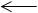 |
| esSolidArrow |
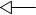 |
| esTriangle |
 |
| esDiamond |
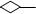 |
| esMiniDiamond |
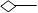 |
| esArrowDiamond |
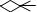 |
| esCrowFoot |
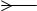 |
| esHalfStickArrow |
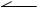 |
| esBar |
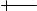 |
| esDoubleBar |
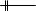 |
| esBelowCircle |
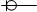 |
| esCircle |
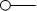 |
| esRect |
|
| esFilledTriangle |
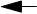 |
| esFilledDiamond |
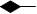 |
| esMiniFilledDiamond |
|
| esArrowFilledDiamond |
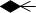 |
| esFilledHalfStickArrow |
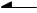 |
| esFilledCircle |
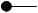 |
| esFilledRect |
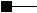 |
| esMiniHalfDiamond |
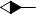 |
|
|
(drawobject elem) |
draws element in original
style. |
|
(arrangeobject elem) |
arranges element in original
style. |
Creating a New Type of Diagram
There are some preparations to utilize Notation Extension. First, profile is
needed. It describes which stereotype it applies Notation Extension to. Second,
Notation Extension file(*.NXT) is needed. It describes how notation is drawn.
You should connect Notation Extension to stereotype in profile. Properties to be
used in Notation Extension should also be inserted as tagged value in profile.
Let me introduce to you how to create ER-Diagram notations for example of
Notation Extension.
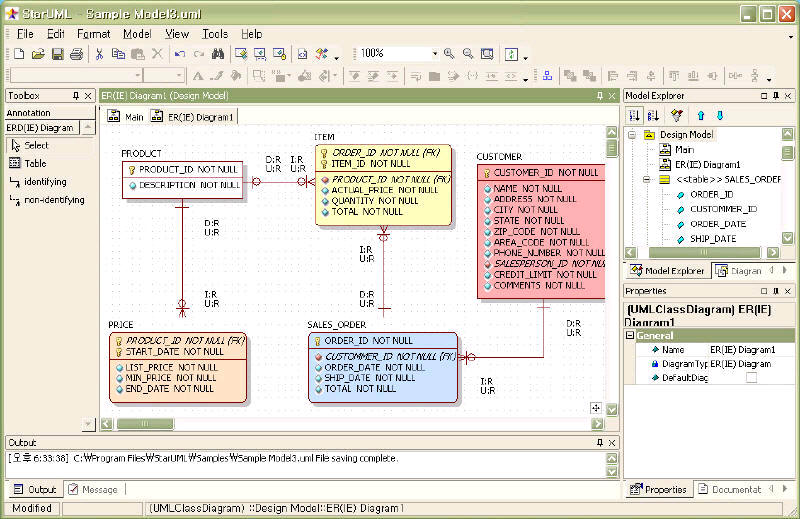
Profile Definition
Looking around elements in ER-Diagram, it consists of several elements
(Table, Column, Relationship, etc.).
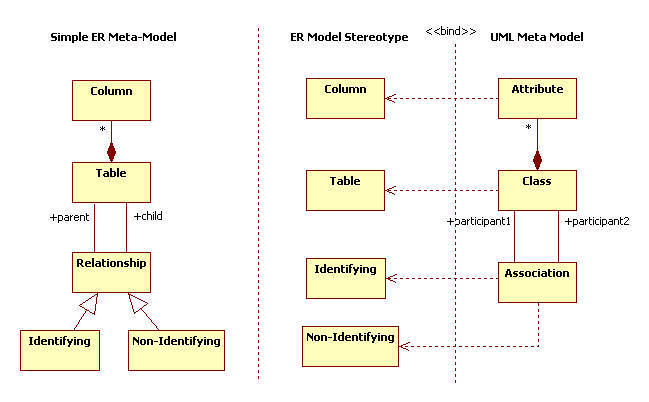
You should make stereotypes for table, column, relationship, etc. and apply
stereotypes to UML models (Class, Association, Attribute) to map ER models to
UML models. These are described like the followings in profile. You add
<STEREOTYPE> sub element named "table" to <STEREOTYPELIST> element and assign <BASECLASS>
element's value as "UMLClass" to apply stereotype to "UMLClass" typed model. In
order for the class stereotyped "table" to be shown as ER notation, Notation
Extension filename("table.nxt") should be specified to <NOTATOIN> element.
For "column" stereotype, Additional tagged values are required to indicate
whether column is PK, FK, AK, or IK. So tag definition set name("table" in this
case) that define these tagged values are defined is described in <RELATEDTAGDEFINITIONSET>
element.
<PROFILE version="1.0">
<HEADER>
...
</HEADER>
<BODY>
<STEREOTYPELIST>
<STEREOTYPE>
<NAME>table</NAME>
<BASECLASSES>
<BASECLASS>UMLClass</BASECLASS>
</BASECLASSES>
<NOTATION>table.nxt</NOTATION>
</STEREOTYPE>
<STEREOTYPE>
<NAME>column</NAME>
<BASECLASSES>
<BASECLASS>UMLAttribute</BASECLASS>
<RELATEDTAGDEFINITIONSET>table</RELATEDTAGDEFINITIONSET>
</BASECLASSES>
</STEREOTYPE>
...
</STEREOTYPELIST>
Tag definition set is described in <TAGDEFINITIONSET> element of <TAGDEFINITIONSETLIST>
and <TAGDEFINITIONSET> element is composed of <TAGDEFINITION> elements that
describe tagged value's properties(name, type, and default value) added for
column stereotype. In the following example, tagged values to Identify PK and FK
are added, each tagged value's type is boolean, and each default value is false.
(it means that every column is neither primary key nor foreign key at the first
time after construction)
...
</STEREOTYPELIST>
<TAGDEFINITIONSETLIST>
<TAGDEFINITIONSET>
<NAME>column</NAME>
<BASECLASSES>
<BASECLASS>UMLAttribute</BASECLASS>
</BASECLASSES>
<TAGDEFINITIONLIST>
...
<TAGDEFINITION lock="False">
<NAME>PK</NAME>
<TAGTYPE>Boolean</TAGTYPE>
<DEFAULTDATAVALUE>false</DEFAULTDATAVALUE>
</TAGDEFINITION>
<TAGDEFINITION lock="False">
<NAME>FK</NAME>
<TAGTYPE>Boolean</TAGTYPE>
<DEFAULTDATAVALUE>false</DEFAULTDATAVALUE>
</TAGDEFINITION>
...
</TAGDEFINITIONLIST>
</TAGDEFINITIONSET>
</TAGDEFINITIONSETLIST>
To select diagram that shows stereotypes after definition of stereotypes,
define new diagram named "ER Diagram" to <DIAGRAMTYPE> element in <DIAGRAMTYPELIST>
element, describe <BASEDIAGRAM> element's value as "ClassDiagram" for diagram to
be based on class diagram, and describe pallette reference name("ERD(IE)") to <AVALIABLEPALLETTE>
element.
<DIAGRAMTYPELIST>
<DIAGRAMTYPE>
<NAME>ER(IE) Diagram</NAME>
<DISPLAYNAME>ER(IE) Diagram</DISPLAYNAME>
<BASEDIAGRAM>ClassDiagram</BASEDIAGRAM>
<ICON>DataModelDiagram.bmp</ICON>
<AVAILABLEPALETTELIST>
<AVAILABLEPALETTE>ERD(IE)</AVAILABLEPALETTE>
</AVAILABLEPALETTELIST>
</DIAGRAMTYPE>
</DIAGRAMTYPELIST>
The pallette informations are described in <PALLETTE> element. <PALLETTE>
element is list that has reference of pallete button item.The detail
informations for pallette button item are described to <ELEMENTPROTOTYPE>
element. <NAME> element describes the element's name to be created, <DISPLAYNAME>
and <ICON> elements describes the button item's name and image file name on
pallette, <DRAGTYPE> element means whether mouse action style is like rectangle
or edge style, <BASEELEMENT> and <STEREOTYPENAME> elements mean that created
element is "Class" element and the element's stereotype is assigned to "table".
To draw element by notation extension at once after element creation, <SHOWEXTENSION>
element's value should be set to true.
<PALETTELIST>
<PALETTE>
<NAME>ERD(IE)</NAME>
<DISPLAYNAME>ERD(IE) Diagram</DISPLAYNAME>
<PALETTEITEMLIST>
<PALETTEITEM>Table</PALETTEITEM>
<PALETTEITEM>identifying</PALETTEITEM>
<PALETTEITEM>non-identifying</PALETTEITEM>
</PALETTEITEMLIST>
</PALETTE>
</PALETTELIST>
<ELEMENTPROTOTYPELIST>
<ELEMENTPROTOTYPE>
<NAME>Table</NAME>
<DISPLAYNAME>Table</DISPLAYNAME>
<ICON>Table.bmp</ICON>
<DRAGTYPE>Rect</DRAGTYPE>
<BASEELEMENT>Class</BASEELEMENT>
<STEREOTYPENAME>table</STEREOTYPENAME>
<SHOWEXTENDEDNOTATION>True</SHOWEXTENDEDNOTATION>
</ELEMENTPROTOTYPE>
...
<ELEMENTPROTOTYPELIST>
...
Writing Notation Extension
Though data modeling is available by defining profile only, Notation
Extension file(*.nxt) that is described to profile's <NOTATION> element should
be written in order that models are shown in ER notation.
The following is summary of "table.nxt" file that draw notation for "table"
stereotype. "onarrange" expression configures status required to draw "table". "ondraw"
expression draws parts of table name, PK column, and other columns.
(notation
(onarrange ...)
(ondraw
// draw name part ...
// draw PK column part ...
// draw other column part ...
)
)
The first part (name compartment) is that variables for drawing are
configured and name string got from model is written starting at the point (x,
y).
(set x left)
(set y top)
...
(set name (mofattr model 'Name'))
(textout x y name)
...
Here, "left" and "top" variables are reserved variables. They take values
from StarUML platform on each time of executing Notation Extension, and may
return values to StarUML platform again on end time of execution Notation
Extension. The followings behaving like this are reserved variables.
|
Variable |
View element |
Returns to StarUML platform |
Description |
|
view |
Node,Edge |
not return |
target view to be drawn |
|
model |
Node,Edge |
not return |
model of target view to be drawn |
|
left |
Node |
return |
target view's left-most position |
|
top |
Node |
return |
target view's top-most position |
|
right |
Node |
return |
target view's right-most position |
|
bottom |
Node |
return |
target view's bottom-most position |
|
width |
Node |
return |
target view's width |
|
height |
Node |
return |
target view's height |
|
minwidth |
Node |
not return |
minimum width of target view |
|
minheight |
Node |
not return |
minimum height of target view |
|
points |
Edge |
not return |
point collection of target edge
view |
|
head |
Edge |
not return |
head element of target
edge view |
|
tail |
Edge |
not return |
tail element of target
edge view |
The following checks whether current table is dependent on others and draws
property table shape. Repeating current table(class)'s association, if
association's head end connects to current table, it means table is dependent,
table is drawn as rounded rectangle. Unless, table is drawn as rectangle and it
means that table is independent on others.
(set isSuperType true)
(set c (mofcolcount model 'Associations'))
(for i 0 (- c 1)
(sequence
(set assocEnd (mofcolat model 'Associations' i))
(if (= assocEnd (mofcolat (mofref assocEnd 'Association') 'Connections' 1))
(set isSuperType false)
nil)))
...
// outline
(setdefaultstyle)
(if isSuperType
(rect x y right bottom)
(roundrect x y right bottom 10 10))
When displaying columns, repeating all the columns that table contains,
elements whose PK tagged value is true are drawn over the other columns, PK icon
is drawn on the left side and column name is drawn on the right side.
...
(for i 0 (- (mofColCount model 'Attributes') 1)
(sequence
// select i-th column
(set attr (mofColAt model 'Attributes' i))
...
// column is PK?
(if (tagVal attr 'ERD' 'column' 'PK')
(sequence
...
(set attrName (mofAttr attr 'Name'))
...
(drawbitmap x y 'primarykey.bmp' true)
(textout (+ x 16) y attrName)
(setdefaultstyle)
... ))))
...
(line left y right y)
And so repeating all the columns again, elements whose PK tagged value is not
true are drawn with column icon and name under the PK columns.
...
(for i 0 (- (mofColCount model 'Attributes') 1)
(sequence
// select i-th column
(set attr (mofColAt model 'Attributes' i))
(set keys '')
...
// column is not PK?
(if (= (tagVal attr 'ERD' 'column' 'PK') false)
(sequence
...
(set attrName (mofAttr attr 'Name'))
...
// draw column
(drawbitmap x y 'column.bmp' true))
(textout (+ x 16) y attrName)
(setdefaultstyle)
... ))))
Installing and Using Notation Extension
The Notation Extension file must exist in path that is described in profile.
In this case of "table" stereotype, because path is not described and file name
is only described, put profile and notation extension file in same folder.
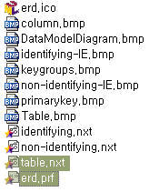
If you have done all, do the following steps for installation.
- Create new module folder in staruml/modules folder.
- Put profile, notation extension file, and related image files into the
module folder.
- Restart StarUML and installation is done.
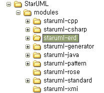
Reference
- Download complete notation extension file, profile, etc. for ER-Diagram
from module downloads of StarUML official homepage of StarUML and install
according to above steps.
The following is how to take advantage of notation extension.
- Start StarUML.
- Click [Model] -> [Profiles...] menu.
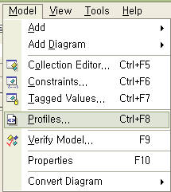
- [Profile Manager] dialog box appears and select Data Modeling profile
in [Available profiles] listbox and click [Include] button.
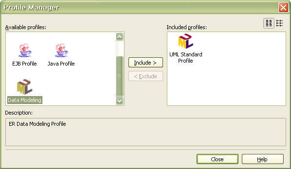
- Select package that is going to contain ER-Diagram on [Model Explorer],
and click [Add
Diagram] -> [ER(IE) Diagram] popup menu.
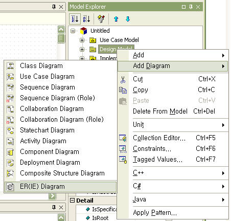
- ER-Diagram appears on [Main] window and pallette for ER modeling is
shown on [toolbox].
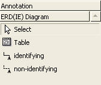
- Use notation on pallette and do modeling. Click
button and set tagged values on [Tagged Value Editor]'s [ERD]
tab to configure column property.
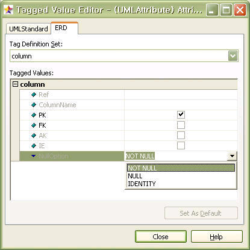
- Write ER Modeling.
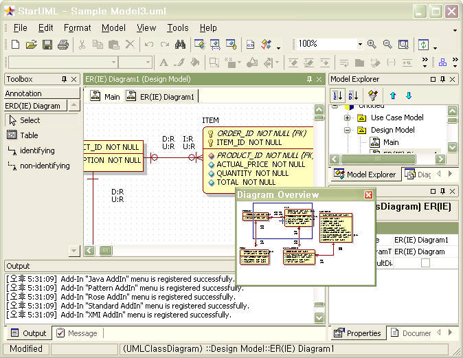